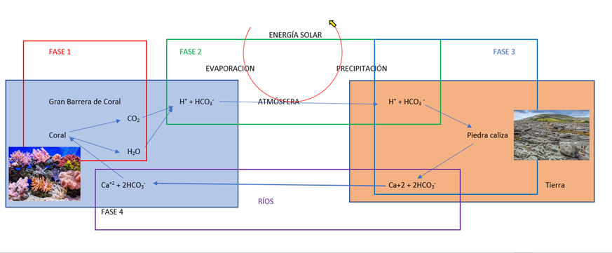

Los ciclos biogeoquímicos son los procesos por los cuales los compuestos, que conforman a los seres vivos (bio) y el ambiente geológico (geo), van a estar en constante intercambio. Pasan de estar en el ambiente geológico al de los seres vivos y luego regresarán al ambiente geológico. Estos intercambios facilitan la disponibilidad de los compuestos químicos en el ambiente geológico que los seres vivos necesiten (Farías, s.f.). El ciclo biogeoquímico más importante de la Gran Barrera de Coral australiana es el ciclo del carbono. Las fases del ciclo del carbono en la Gran Barrera de Coral son cuatro. Estas cuatro fases serán representadas en el esquema 1. En la primera fase, el coral va a construir su esqueleto con carbonato de calcio y liberará CO2. Según Suzuki & Kawahata, esta construcción se va a dar durante un proceso llamado calcificación. Esta clasificación tiene la siguiente reacción química: Ca2+ + 2HCO3 → CaCO3 + H2O + CO2. Además, podemos observar que esta reacción libera CO2. Este CO2 se va a liberar al mar y por consiguiente será una fuente atmosférica de este compuesto (2004, p. 229).
En la segunda fase, el agua del mar se evapora con el CO2 disuelto en su composición y se precipitará en la tierra firme. Según el Water Science School, la energía solar que cae sobre los océanos evaporará el agua. El 10% de esta agua se precipitará en tierra firme(s.f.). Sin embargo, esta agua lleva consigo CO2. Según Sánchez, Morales & Velásquez (2009, p.170), la reacción que se llevará a cabo en la cual el CO2 se adhiere a la estructura química del agua es la siguiente: CO2 + H2O → H+ + HCO3. Debido a esto, el agua que se evaporara a la atmósfera tendrá un pH ácido de 5.6 o incluso menor por la contaminación ambiental (2009, p.170).
En la tercera fase, las precipitaciones ácidas disolverán la caliza y liberarán bicarbonato cálcico al agua. Según la página EcuRed, Lla caliza es un tipo de roca sedimentaria. En su composición, va a tener un 90% de carbonato de calcio (2011). Debido a su composición es soluble en aguas ácidas, como el agua del mar que lleva CO2. Cuando el agua acidulada haga reacción con la piedra caliza, el carbonato cálcico se disolverá en el agua como bicarbonato cálcico (Rocas y Minerales, 2016). Muestra de ello es que, Según López Martínez, un análisis del agua de las precipitaciones y de las que se encuentran dentro del sistema Kárstico nos demuestra que las precipitaciones son ácidas (pH de 5,6), debido a la presencia de HCO3 pero no están mineralizadas. Por otro lado, el agua al interior del sistema Kárstico presenta bicarbonato cálcico debido a la descomposición de la caliza y su disolución de los componentes en el agua (1984, p.132).
En la cuarta fase, el agua con bicarbonato cálcico regresará al mar a través de los ríos y será usada por las especies marinas o formarán parte del sedimento. Según la Water Science School, Un tercio de la lluvia que ha caído sobre tierra firme va a regresar a los mares a través de los ríos (s.f.). Sin embargo, estas aguas regresarán con bicarbonato cálcico dentro de su composición. Como lo señala Ruiz, Echeandía, & Romero (1997, p.104), estudios a diferentes ríos ubicados a lo largo de las fronteras de España y Francia, demuestra que sus aguas son altamente ricas en bicarbonatos cálcicos (1997, p.104). Por consiguiente, estos compuestos que son liberados al mar van a formar parte del sedimento marino o serán usados por las especies marinas, como los corales.
Fase 1 en los corales (Figura 8, Ticbeat, 2020) realizando la calcificación. En la fase dos el agua con el CO2 irán a tierra firme a través de la evaporación del agua y se precipitará en las piedras calizas. En la fase 3 se dará las reacciones químicas en las piedras calizas (Figura 9,Gettyimages, s.f.), liberarán los compuestos y luego pasarán al mar a través de los ríos en la fase 4.
Bibliografía
Farías, L. (s.f.). Océanos y ciclos biogeoquímicos. Obtenido de Diapositiva de Power Point: http://www.cr2.cl/wp-content/uploads/2016/07/laurafarias-ciclosbiogeoquimicos.pdf
EcuRed. (28 de Abril de 2011). Piedra caliza. Obtenido de EcuRed: https://www.ecured.cu/Piedra_caliza#Formaci.C3.B3n_u_origen
SUZUKI, A., & KAWAHATA, H. (2004). Reef Water CO2 System and Carbon Production of Coral Reefs: TERRAPUB, 229–248. Obtenido de https://www.terrapub.co.jp/e-library/kawahata/pdf/229.pdf
Water Science School. (s.f.). El Ciclo del Agua, The Water Cycle, Spanish. Obtenido de U.S. Geological Survey: https://www.usgs.gov/special-topic/water-science-school/science/el-ciclo-del-agua-water-cycle-spanish?qt-science_center_objects=0#
Ruiz, E., Echeandía, A., & Romero, F. (1997). RELACIONES ENTRE AGUA Y SEDIMENTO EN RIOS DE ORIGEN TORRENCIAL. Limnética, 101-107.
Sánchez, L., Morales, J., & Velásquez, H. (2009). COMPOSICIÓN IÓNICA Y NIVELES DE ACIDEZ DE LAS LLUVIAS EN MARACAIBO. Revista internacional de contaminación ambiental., 169-179.
Rocas y Minerales. (2016). CALIZA. Obtenido de Rocas y Minerales: https://www.rocasyminerales.net/caliza/
López Martinez, J. (1984). Disolución de rocas carbonatadas. Cuantificación del proceso actual de karstificación en el Macizo de la Piedra de San Martin (Pirineo Occidental). Cuadernos de Investigación Geográfica, 10, 127–138.